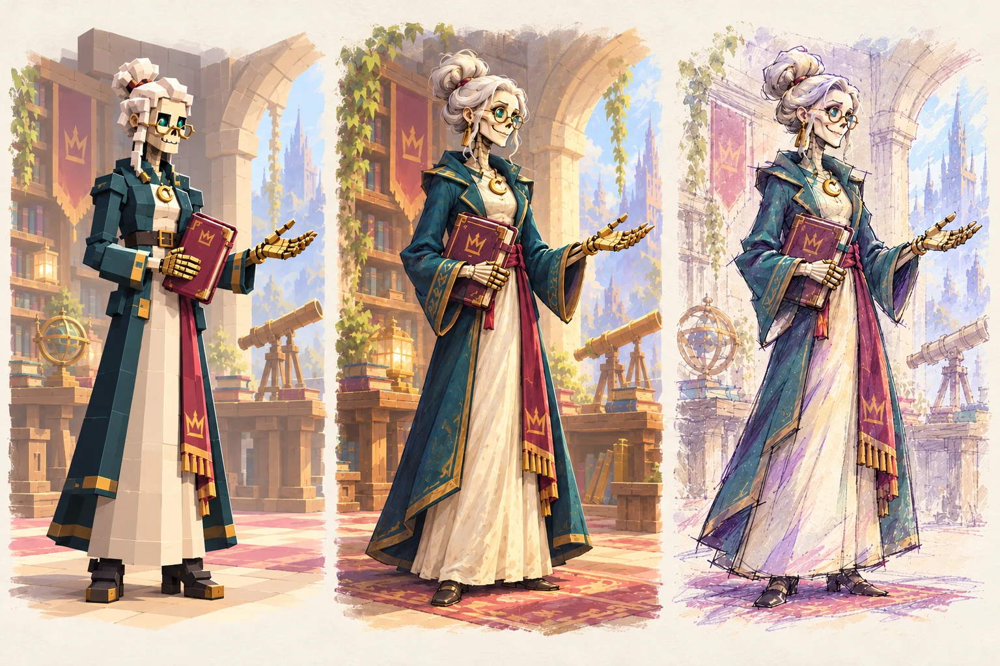

Research on young players and references from successful games inform the characters, spaces and creative experiences of VRHS.

RESEARCH INTO ART DIRECTION
How research informs the design
Youth studies establish context. A 20-game reference study offers examples to examine. The art-direction task is to translate relevant ideas into a distinctive school, memorable teachers and activities students want to try.
Research cutoff: October 29, 2026. The reference set combines youth surveys, all-age Roblox activity and industry reports; it is not a unified popularity ranking of US players aged 13–17. Royale High is an additional thematic reference outside the 20-game set. Game comparisons and proposed VRHS directions below are creative interpretations, not findings established by the studies.
RESEARCH FOUNDATIONS
Audience and roleplay studies
Audience studies and roleplay research inform the creative brief.
UNIVERSITY-AFFILIATED AUDIENCE RESEARCH · 2024–2025
Teens and Screens
Center for Scholars & Storytellers at UCLA United States · ages 10–24
In 2024, 36.2% of 1,644 respondents preferred content featuring fantasy worlds; 63.5% wanted more stories centered on friendships and platonic relationships. The 2025 survey of 1,500 respondents put relatable stories ahead of fantasy, while friendship remained important.
IMPLICATION FOR VRHS ART DIRECTION
A fantastical school can carry recognizable feelings and relationships. Give unusual monster mentors expressive faces, believable teaching gestures and welcoming spaces. Treat that connection between fantasy and relatable experience as a direction to test.
LIMIT
These are university-affiliated research reports, not journal papers. The age range includes children and young adults; neither report establishes the preferences of US 13–17-year-olds alone. The newer findings do not support a claim that fantasy preference rises every year.
Interviewed players described D&D as a space for safety, coping, exploration and growth, including exploration of their identities and relationships.
IMPLICATION FOR VRHS ART DIRECTION
Make room for different student identities and distinctive mentors. Costume, silhouette, gesture and personal spaces can help players imagine a place for themselves in the school. This is a creative interpretation of the paper, not an outcome demonstrated for VRHS.
LIMIT
A small interview study of existing adult players explains experiences rather than measuring audience size or proving causation. It does not establish teen or Gen Alpha demand, or educational or therapeutic benefits of this game.
Minecraft, Fortnite and Roblox lead favorite-game mentions. Brawl Stars also appears among the favorites, supporting its inclusion as a relevant game to examine.
IMPLICATION FOR THE REFERENCE STUDY
Look closely at worlds players can inhabit, personal expression and readable character systems. These are directions to investigate through the games, rather than explanations proved by the survey.
LIMIT
A German sample aged 12–19 is not a US 13–17 ranking, and preference does not demonstrate educational effectiveness.
INSTITUTIONAL YOUTH STUDY · 2026
Barn og medier 2026
Norwegian Media Authority · Medietilsynet Norway · ages 9–18
Roblox, Fortnite and Minecraft lead the overall responses about games played most. The report also shows that preferences differ across age groups.
IMPLICATION FOR VRHS
Test the intended teen tone directly. Review whether expressive characters, school costumes and inviting environments feel appealing to both younger and older teens.
LIMIT
The study includes younger children and a different national audience. Individual Roblox experiences cannot inherit the platform’s audience profile.
The sources above serve different purposes: audience reports describe preferences, while the peer-reviewed D&D paper explores player experiences. Their actual ages and methods matter more than broad generational labels. Visual and interaction choices remain art-direction hypotheses to test.
SUCCESSFUL GAMES AS REFERENCES
Six game references and ideas to test
Study the principle. Give VRHS its own visual answer.
Landmarks and layered views make a world feel worth exploring.
One strong vista and deliberate focal depth at a much smaller scope.
WHAT THE REFERENCES SUGGEST
Proposed design choices for VRHS
Use successful games to identify useful principles: a sense of belonging, expressive characters, clear objectives and satisfying acts of making.
Translate those principles into original monster mentors, recognizable department spaces, readable teaching props and a considered stage for student work. The art guide connects those choices across all eight disciplines.
Does the look feel distinctive, welcoming and age-appropriate?
Can a fresh player understand the next action without coaching?
Does the player recognize what their choice changed?
Would they choose to try another class or show a friend?
Playtest results forthcoming.
SOURCE NOTES
Sources and research limits
CSS at UCLA · Teens and Screens 2024 ↗University-affiliated audience report. US respondents aged 10–24; fantasy and friendship preferences inform the visual brief.
CSS at UCLA · Teens and Screens 2025 ↗University-affiliated follow-up. Relatable stories moved ahead of fantasy; retain this update alongside the 2024 finding.
Thomas et al. · D&D and You, 2026 ↗Peer-reviewed paper: D&D and You: A Reflexive Thematic Analysis of Young Adult Players’ Experiences Exploring Identity and Mental Health Through Dungeons and Dragons. Eleven UK players aged 18–25; qualitative evidence about experiences, not a teen audience estimate.
mpfs · JIM Studie 2025 ↗Institutional survey. Favorite-game mentions among German youth aged 12–19; useful audience context with geographic and age limits.
Medietilsynet · Barn og medier 2026 ↗Institutional study. Games played by young people in Norway, with age differences relevant to planning teen feedback.
Sensor Tower · mobile download context ↗Supplementary industry report, September 2026. Broad mobile reach without teen age segmentation; not an academic study or evidence of learning value.
Digest adapted from the VRHS research prepared October 29, 2026. The six comparison links above point to official game sources. Research findings, game observations and proposed art choices are kept distinct; popularity alone does not establish why a game succeeds.